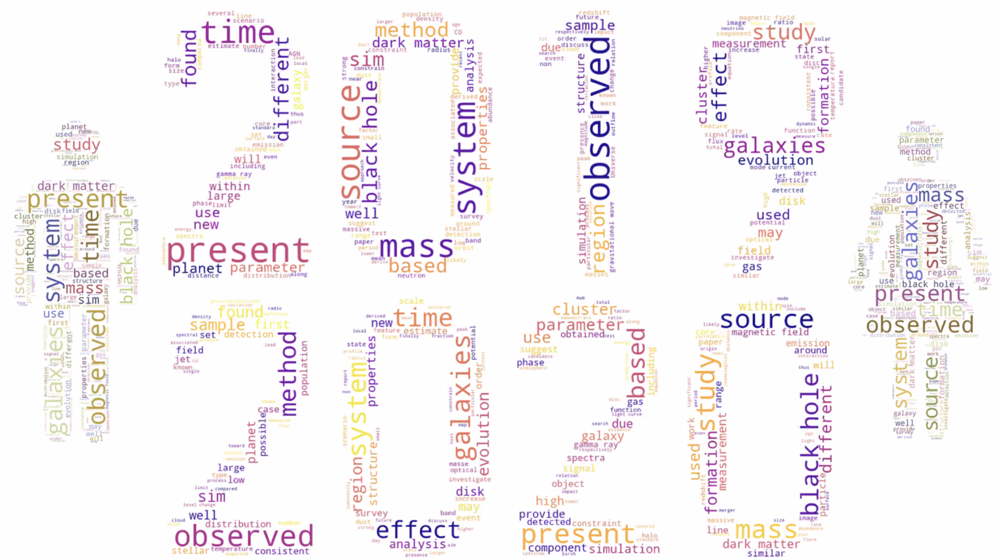

Results from the UMass Astronomy Data Challenge

The UMass Amherst Astronomy Department participated in a workshop on creating effective plots and presentations. As a part of this workshop, all department members were invited to join a ‘data challenge’, where we were given the same set of data of all astrophysics arXiv submissions between March-August in 2019 and 2020. Beyond the common data set, there were no further instructions beyond exercising our creativity and some of the techniques we discussed in the workshop. The result was a lively show and tell that included a diverse range of approaches. Please check out the results in our Data Challenge gallery!